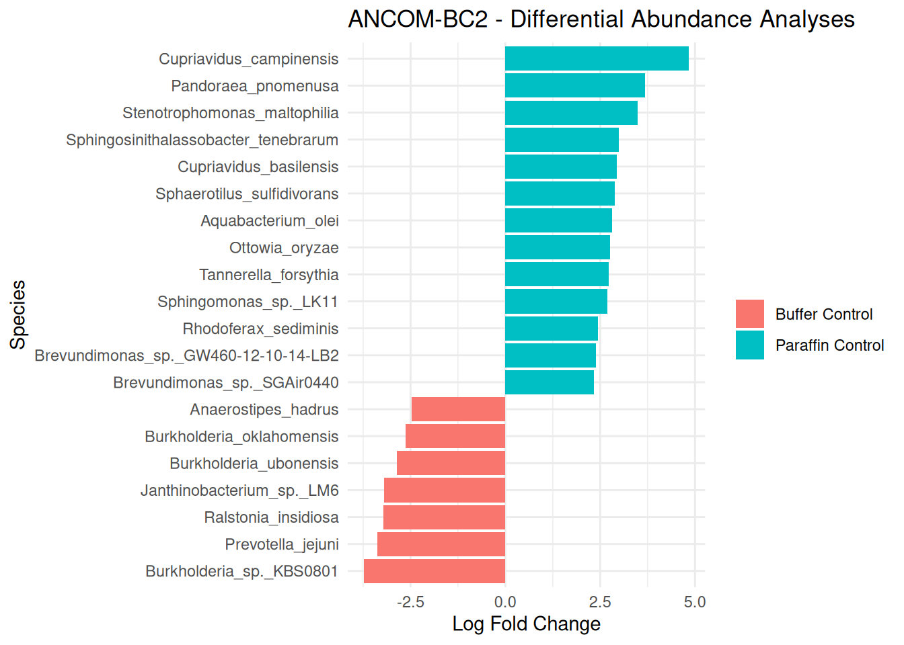
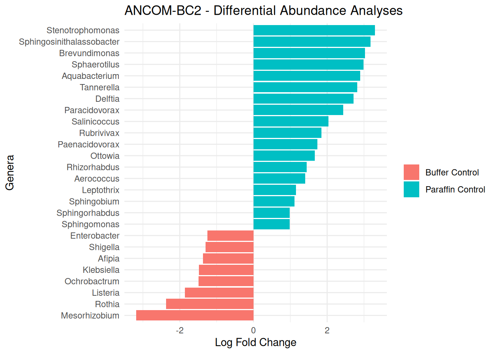
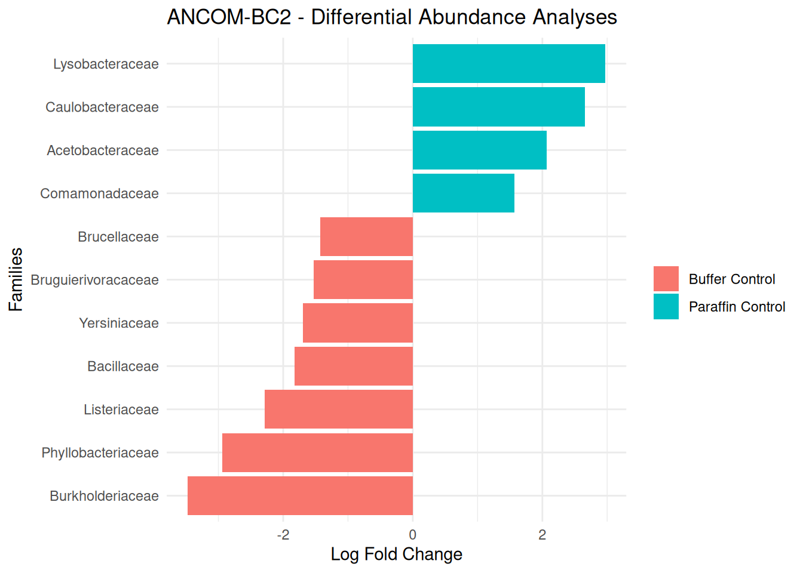
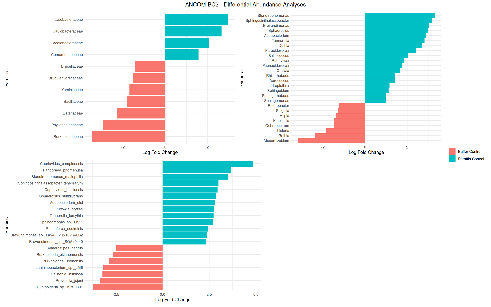

res <-readRDS("./ancombc2_species.rds")res_prim <- res$ressig_taxa_species <- res_prim %>%mutate(Direction =if_else(lfc_sample_typeparaffin_ctrl >0, "Paraffin Control", "Buffer Control")) %>%filter(p_sample_typeparaffin_ctrl <=0.05) %>%arrange(desc(abs(lfc_sample_typeparaffin_ctrl))) %>%slice_head(n =20)#filter(diff_ConditionName == TRUE) %>% # Replace ConditionName with your actual group#arrange(desc(abs(lfc_ConditionName))) %>%#head(20)# Plottingggplot(sig_taxa_species, aes(x =reorder(taxon, lfc_sample_typeparaffin_ctrl), y = lfc_sample_typeparaffin_ctrl, fill = Direction)) +#theme(legend.title = element_blank()) +#theme(legend.position="top", legend.direction="horizontal") +scale_fill_discrete("") +geom_bar(stat ="identity") +coord_flip() +labs(title ="ANCOM-BC2 - Differential Abundance Analyses",x ="Species", y ="Log Fold Change") +theme_minimal()

Genus
Code
res <-readRDS("./ancombc2_genus.rds")res_prim <- res$ressig_taxa_genus <- res_prim %>%mutate(Direction =if_else(lfc_sample_typeparaffin_ctrl >0, "Paraffin Control", "Buffer Control")) %>%filter(p_sample_typeparaffin_ctrl <=0.05) #%>% #arrange(desc(abs(lfc_sample_typeparaffin_ctrl))) %>% #slice_head(n = 20)#filter(diff_ConditionName == TRUE) %>% # Replace ConditionName with your actual group#arrange(desc(abs(lfc_ConditionName))) %>%#head(20)# Plottingggplot(sig_taxa_genus, aes(x =reorder(taxon, lfc_sample_typeparaffin_ctrl), y = lfc_sample_typeparaffin_ctrl, fill = Direction)) +scale_fill_discrete("") +geom_bar(stat ="identity") +coord_flip() +labs(title ="ANCOM-BC2 - Differential Abundance Analyses",x ="Genera", y ="Log Fold Change") +theme_minimal()

Family
Code
res <-readRDS("./ancombc2_family.rds")res_prim <- res$ressig_taxa_family <- res_prim %>%mutate(Direction =if_else(lfc_sample_typeparaffin_ctrl >0, "Paraffin Control", "Buffer Control")) %>%filter(p_sample_typeparaffin_ctrl <=0.05) #%>% #arrange(desc(abs(lfc_sample_typeparaffin_ctrl))) %>% #slice_head(n = 20)#filter(diff_ConditionName == TRUE) %>% # Replace ConditionName with your actual group#arrange(desc(abs(lfc_ConditionName))) %>%#head(20)# Plottingggplot(sig_taxa_family, aes(x =reorder(taxon, lfc_sample_typeparaffin_ctrl), y = lfc_sample_typeparaffin_ctrl, fill = Direction)) +scale_fill_discrete("") +geom_bar(stat ="identity") +coord_flip() +labs(title ="ANCOM-BC2 - Differential Abundance Analyses", x ="Families", y ="Log Fold Change") +theme_minimal()

Merge all three plots into single plot
Code
require(patchwork)plt_species <-ggplot(sig_taxa_species, aes(x =reorder(taxon, lfc_sample_typeparaffin_ctrl), y = lfc_sample_typeparaffin_ctrl, fill = Direction)) +scale_fill_discrete("") +geom_bar(stat ="identity") +coord_flip() +labs(x ="Species", y ="Log Fold Change") +theme_minimal()plt_genus <-ggplot(sig_taxa_genus, aes(x =reorder(taxon, lfc_sample_typeparaffin_ctrl), y = lfc_sample_typeparaffin_ctrl, fill = Direction)) +scale_fill_discrete("") +geom_bar(stat ="identity") +coord_flip() +labs(x ="Genera", y ="Log Fold Change") +theme_minimal()plt_family <-ggplot(sig_taxa_family, aes(x =reorder(taxon, lfc_sample_typeparaffin_ctrl), y = lfc_sample_typeparaffin_ctrl, fill = Direction)) +scale_fill_discrete("") +geom_bar(stat ="identity") +coord_flip() +labs(x ="Families", y ="Log Fold Change") +theme_minimal()combined_plot <- (plt_family | plt_genus) / (plt_species |guide_area()) +plot_layout(guides ="collect") &theme(legend.position ="right")combined_plot +plot_annotation(title ="ANCOM-BC2 - Differential Abundance Analyses",theme =theme(plot.title =element_text(hjust =0.5)) )

MaAsLin2
Fixed effect: control type, random effect: NULL
Fixed effect: control type, random effect: person, year
Aldex2
Code
require(ALDEx2)otu_count <- pseq %>%ps_filter(sample_type !="pcr_ctrl") %>%ps_filter(person !="unknown") %>% microbiome::abundances()metadata <- pseq %>%ps_filter(sample_type !="pcr_ctrl") %>%ps_filter(person !="unknown") %>% microbiome::meta()mm <-model.matrix(~ sample_type + person, data = metadata)# Step A: Generate Monte Carlo samples of the Dirichlet distribution# This accounts for the uncertainty of small sample sizesx <-aldex.clr(otu_count, mm, mc.samples =128, denom ="all", verbose =FALSE)# Step B: Run the GLM# This will test every taxon against the Condition AND Technicianglm_result <-aldex.glm(x, mm, fdr.method ="BH")